flowchart TD
A[Fundamentos de igraph] --> B[Crear redes]
A --> C[grado (degree) y distribución]
A --> D[Matriz de adyacencia]
A --> E[Redes especiales]
B --> B1[Nodos y conexiones]
B --> B2[Atributos]
B --> B3[Visualización]
C --> C1[grado (degree) de entrada/salida]
C --> C2[Histogramas]
D --> D1[Heatmap]
E --> E1[Estrella / Anillo / Árbol]
Fundamentos de igraph
🎯 Objetivos de aprendizaje
Al finalizar este capítulo serás capaz de:
- Crear redes vacías, agregar nodos y conexiones usando
igraph. - Manipular atributos de vértices y conexiones (color, nombre, forma).
- Visualizar redes con distintos layouts y personalizaciones.
- Construir la matriz de adyacencia y representarla como mapa de calor.
- Generar redes especiales: estrella, anillo, árbol, lattice.
Pregunta motivadora: Si representaras tu grupo de amigos como una red, donde cada persona es un punto y cada amistad es una línea, ¿cómo se vería? ¿Quién estaría más “conectado”? ¿Habría grupos aislados?
Preparación del entorno
library(igraph)
Attaching package: 'igraph'The following objects are masked from 'package:stats':
decompose, spectrumThe following object is masked from 'package:base':
union
📦 Paquete requerido
Si no tienes instalado igraph, ejecuta:
install.packages("igraph")Crear redes desde cero
Un grafo (o red) se compone de vértices (nodos) y conexiones (conexiones entre nodos). En igraph, todo comienza creando un grafo vacío y luego añadiendo elementos.
💡 Concepto clave
En igraph, los vértices se acceden con V(g) y las conexiones con E(g). Piensa en V de vertices y E de edges.
Paso 1: Grafo vacío
# Crear un grafo dirigido vacío con 5 nodos
g <- make_empty_graph(n = 5, directed = TRUE)
# Asignar atributos visuales a los nodos
V(g)$color <- "yellow"
# Visualizar
plot(g,
main = "Red vacía con 5 nodos",
vertex.size = 30)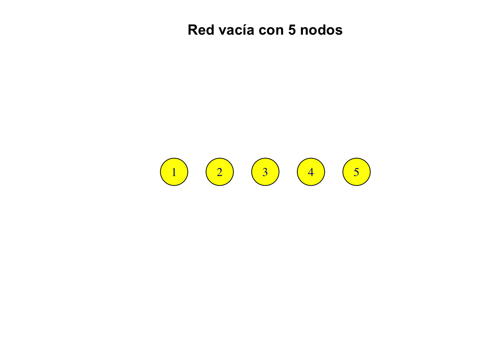
Paso 2: Agregar conexiones
Las conexiones se agregan como un vector de pares: c(origen1, destino1, origen2, destino2, ...).
# Agregar conexiones: 1→2, 1→3, 2→4, 3→4, 4→5
g <- add_edges(g, c(1,2, 1,3, 2,4, 3,4, 4,5))
plot(g,
main = "Red con conexiones agregadas",
vertex.size = 30,
edge.arrow.size = 0.6)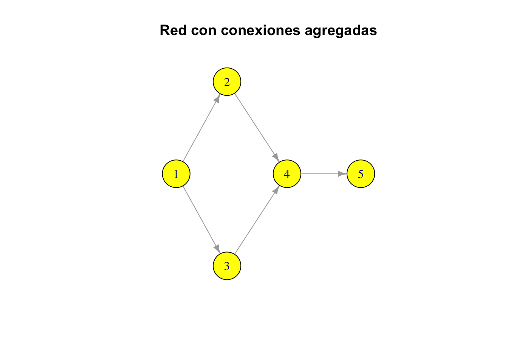
Paso 3: Agregar nodos con atributos
# Agregar un nodo nuevo con color rojo
g <- add_vertices(g, 1, color = "red")
# Conectar el nuevo nodo (nodo 6)
g <- add_edges(g, c(3,6, 6,5))
plot(g,
main = "Nodo rojo y nuevas conexiones",
vertex.size = 30,
edge.arrow.size = 0.6)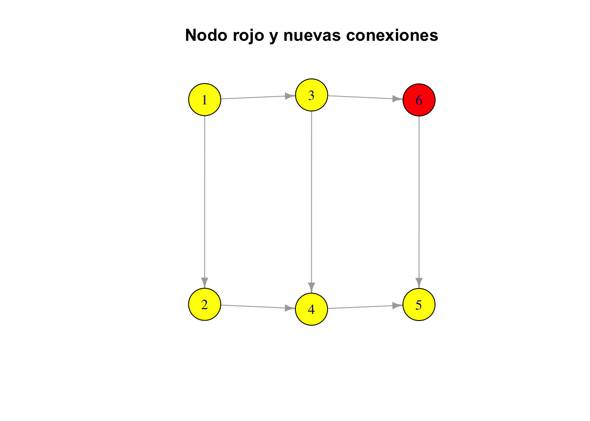
Paso 4: Nombrar los nodos
# Asignar nombres a los vértices
V(g)$name <- LETTERS[1:6]
plot(g,
main = "Nodos con nombres A–F",
vertex.size = 30,
edge.arrow.size = 0.6)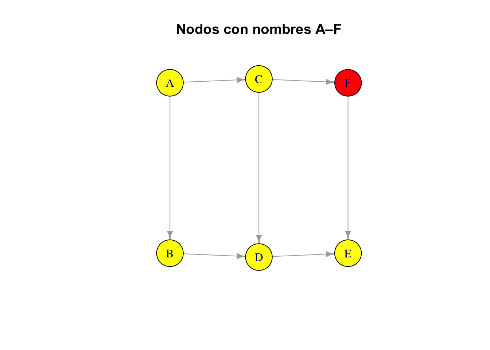
Paso 5: Modificar conexiones
# Eliminar la segunda conexión (A→C) y agregar C→A
g <- delete_edges(g, 2)
g <- add_edges(g, c(3, 1)) # C → A
plot(g,
main = "Cambio en dirección de conexión",
vertex.size = 30,
edge.arrow.size = 0.6)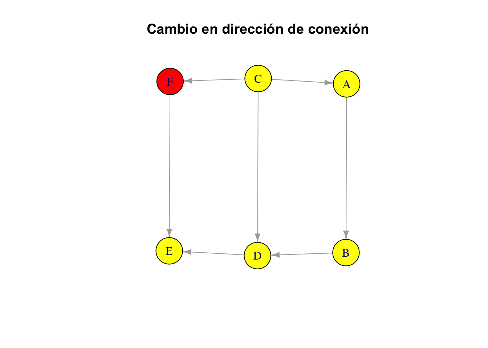
⚠️ Error frecuente
Cuando eliminas conexiones con delete_edges(), los índices se reorganizan. Si eliminas la conexión 2, la que antes era la 3 ahora es la 2. Siempre verifica con E(g) después de eliminar.
grado (degree) y distribución de grado (degree) {#sec-grado (degree)-basico}
El grado (degree) de un nodo es el número de conexiones que tiene. En redes dirigidas, distinguimos entre grado (degree) de entrada (in-degree) y de salida (out-degree).
# grado (degree) total de cada nodo
degree(g)A B C D E F
2 2 3 3 2 2 # ¿Cuántas conexiones llegan a cada nodo?
degree(g, mode = "in")A B C D E F
1 1 0 2 2 1 # ¿Cuántas conexiones salen de cada nodo?
degree(g, mode = "out")A B C D E F
1 1 3 1 0 1 Visualizar el grado (degree)
plot(g,
layout = layout_nicely(g),
vertex.size = degree(g, mode = "in") * 10 + 10,
vertex.label.dist = 0.5,
edge.arrow.size = 0.5,
main = "Tamaño proporcional al grado (degree) de entrada")-1.png) {#fig-tamano-grado (degree) fig-alt=‘Red donde los nodos más grandes reciben más conexiones’ width=672}
{#fig-tamano-grado (degree) fig-alt=‘Red donde los nodos más grandes reciben más conexiones’ width=672}
hist(degree(g),
col = "salmon",
main = "Histograma del grado (degree)",
xlab = "grado (degree)",
ylab = "Frecuencia",
border = "white")-1.png) {#fig-histograma-grado (degree) fig-alt=‘Histograma que muestra la frecuencia de cada valor de grado (degree)’ width=672}
{#fig-histograma-grado (degree) fig-alt=‘Histograma que muestra la frecuencia de cada valor de grado (degree)’ width=672}
Matriz de adyacencia
La matriz de adyacencia es una representación numérica de la red: un 1 en la posición \((i,j)\) indica que existe una conexión del nodo \(i\) al nodo \(j\).
\[ A_{ij} = \begin{cases} 1 & \text{si existe conexión de } i \text{ a } j \\ 0 & \text{en otro caso} \end{cases} \]
# Obtener la matriz de adyacencia
adj_mat <- as.matrix(get.adjacency(g))Warning: `get.adjacency()` was deprecated in igraph 2.0.0.
ℹ Please use `as_adjacency_matrix()` instead.# Mostrar como tabla
knitr::kable(adj_mat, caption = "Matriz de adyacencia de la red")| A | B | C | D | E | F | |
|---|---|---|---|---|---|---|
| A | 0 | 1 | 0 | 0 | 0 | 0 |
| B | 0 | 0 | 0 | 1 | 0 | 0 |
| C | 1 | 0 | 0 | 1 | 0 | 1 |
| D | 0 | 0 | 0 | 0 | 1 | 0 |
| E | 0 | 0 | 0 | 0 | 0 | 0 |
| F | 0 | 0 | 0 | 0 | 1 | 0 |
heatmap(adj_mat,
Rowv = NA, Colv = NA,
col = c("white", "steelblue"),
main = "Mapa de calor — Matriz de adyacencia",
scale = "none")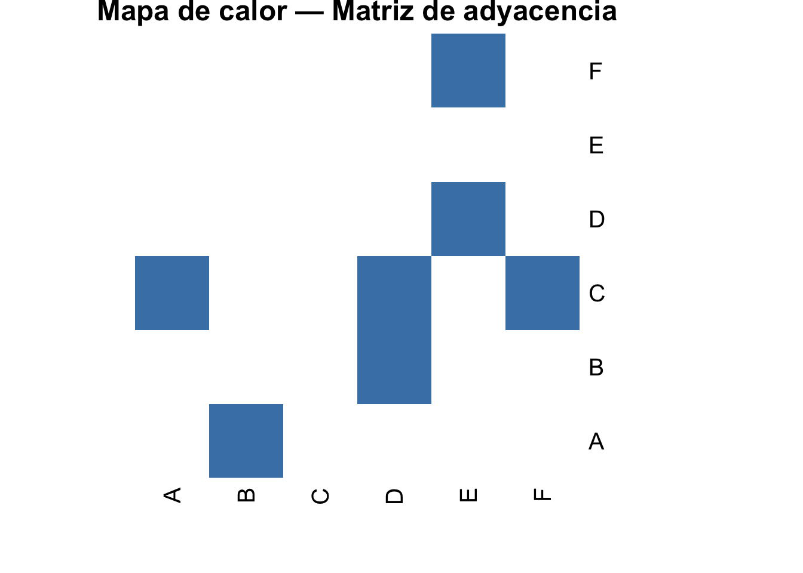
💡 Concepto clave
En una red no dirigida, la matriz de adyacencia es simétrica (\(A_{ij} = A_{ji}\)). En una red dirigida, no necesariamente lo es. Verifica esto convirtiendo la red con as.undirected(g).
Redes especiales
igraph incluye funciones para crear topologías clásicas que aparecen frecuentemente en la teoría de redes.
plot(make_star(10),
vertex.color = c("tomato", rep("gold", 9)),
vertex.size = 20,
main = "Red estrella")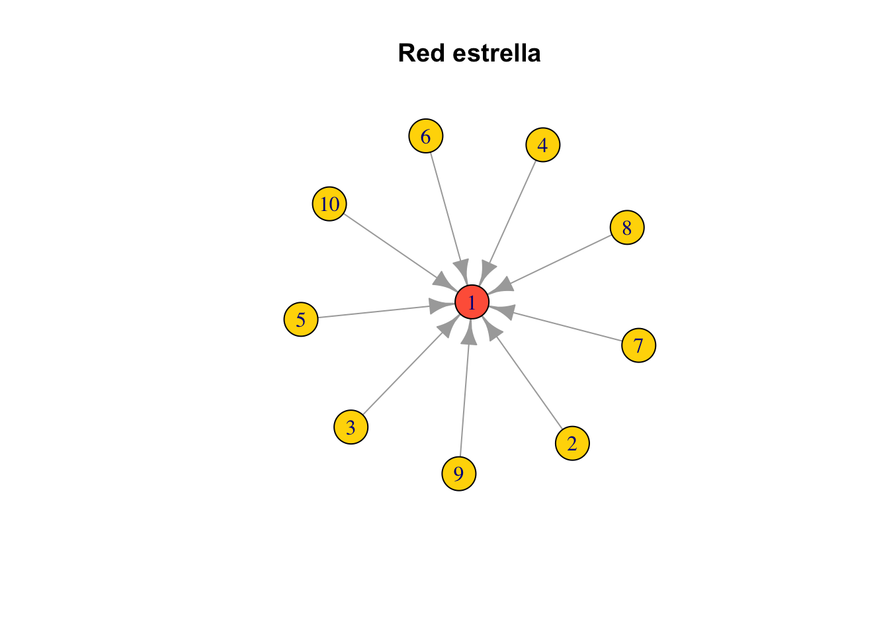
plot(make_ring(10),
vertex.color = "skyblue",
vertex.size = 20,
main = "Red anillo")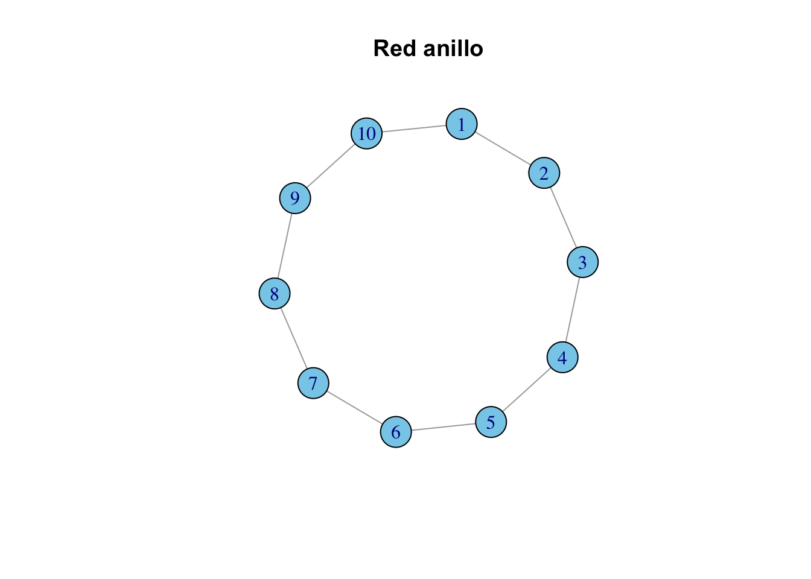
plot(make_tree(15, children = 2),
vertex.color = "lightgreen",
vertex.size = 15,
layout = layout_as_tree,
main = "Árbol binario")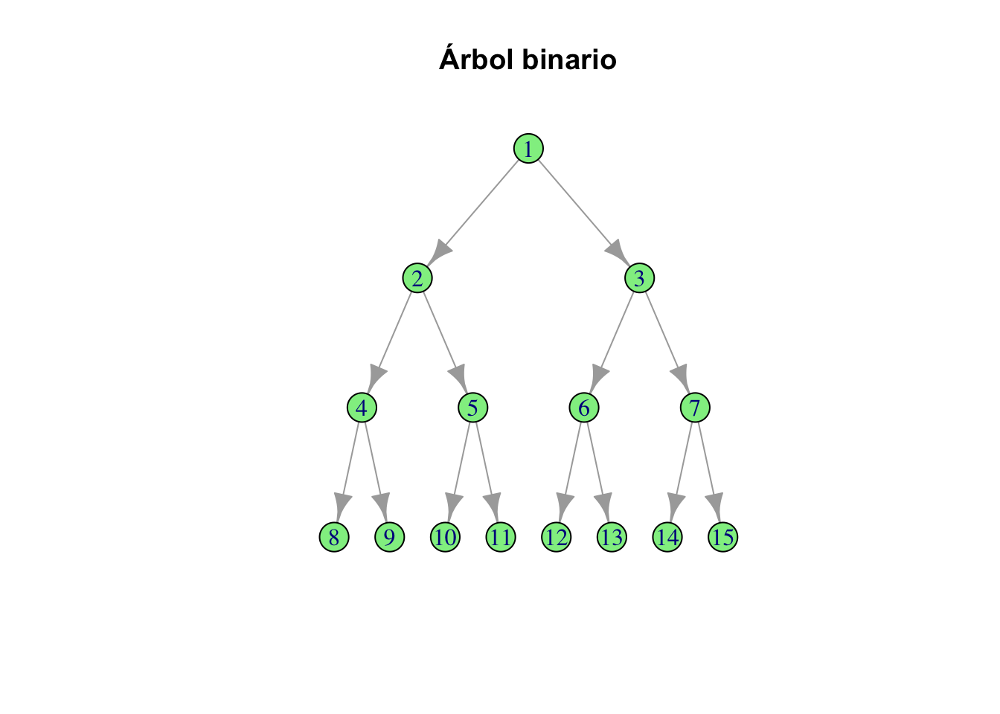
plot(make_lattice(c(4, 4)),
vertex.color = "plum",
vertex.size = 20,
main = "Lattice 4×4")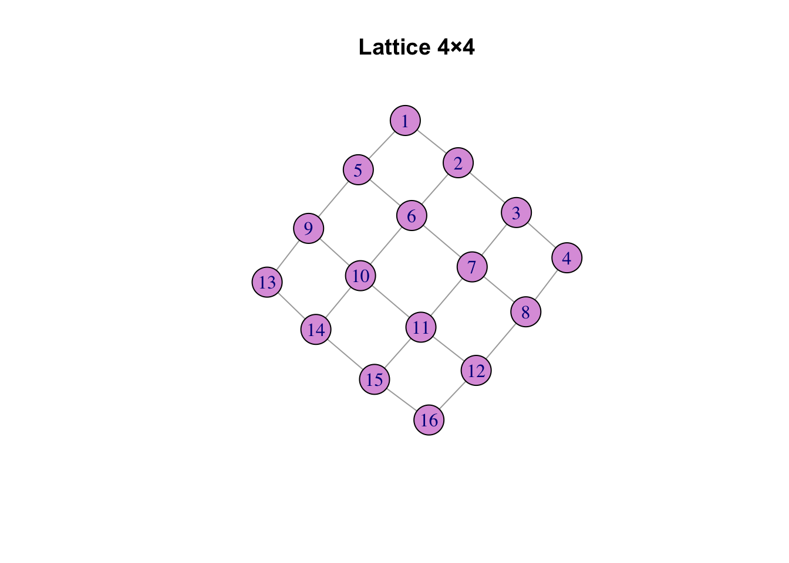
Ejercicios
Ejercicios resueltos
Ejercicio resuelto 1: Crea una red no dirigida de 7 nodos con colores aleatorios de una paleta, conéctalos formando una cadena (path), y visualiza el resultado.
📝 Solución
Paso 1: Crear el grafo tipo cadena y asignar colores.
set.seed(42)
# Crear cadena de 7 nodos
#g_cadena <- make_graph(~ 1-2-3-4-5-6-7, directed = FALSE)
g_cadena <- graph_from_literal(1-2-3-4-5-6-7)
# Asignar colores aleatorios de una paleta
paleta <- c("tomato", "gold", "skyblue", "lightgreen", "plum", "salmon", "steelblue")
V(g_cadena)$color <- sample(paleta, 7)
V(g_cadena)$name <- paste0("N", 1:7)Paso 2: Visualizar la red.
plot(g_cadena,
vertex.size = 30,
main = "Red tipo cadena (path)")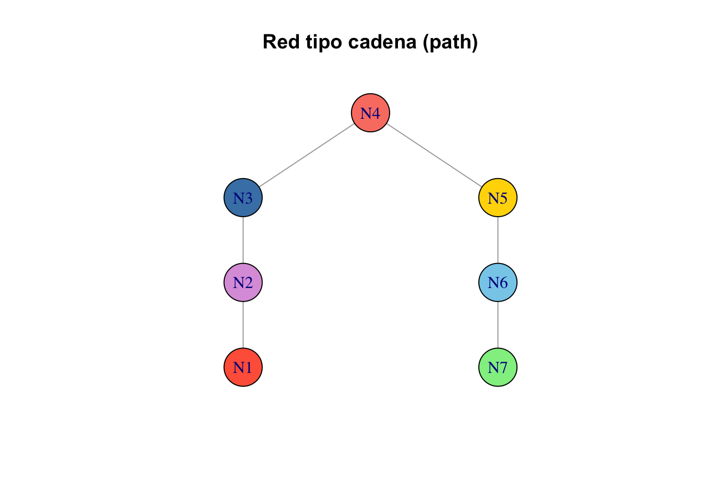
Paso 3: Verificar propiedades.
cat("Número de nodos:", vcount(g_cadena), "\n")Número de nodos: 7 cat("Número de conexiones:", ecount(g_cadena), "\n")Número de conexiones: 6 cat("grado (degree) de cada nodo:", degree(g_cadena), "\n")grado (degree) de cada nodo: 1 2 2 2 2 2 1 cat("¿Es conexa?", is_connected(g_cadena), "\n")¿Es conexa? TRUE Interpretación: La cadena tiene 7 nodos y 6 conexiones. Los nodos extremos tienen grado (degree) 1 y los internos grado (degree) 2. La red es conexa (todos los nodos se pueden alcanzar entre sí).
Ejercicio resuelto 2: Construye manualmente una red donde los nodos representen 5 ciudades mexicanas y las conexiones indiquen si comparten frontera estatal. Muestra la matriz de adyacencia.
📝 Solución
Paso 1: Definir las ciudades y sus conexiones fronterizas.
# Crear la red
ciudades <- graph_from_literal(
Querétaro -- Guanajuato,
Querétaro -- "San Luis Potosí",
Querétaro -- Hidalgo,
Guanajuato -- "San Luis Potosí",
Hidalgo -- "Estado de México"
)
V(ciudades)$color <- "gold"
V(ciudades)$size <- 25Paso 2: Visualizar y mostrar la matriz.
plot(ciudades,
vertex.label.cex = 0.8,
main = "Red de vecindad entre estados")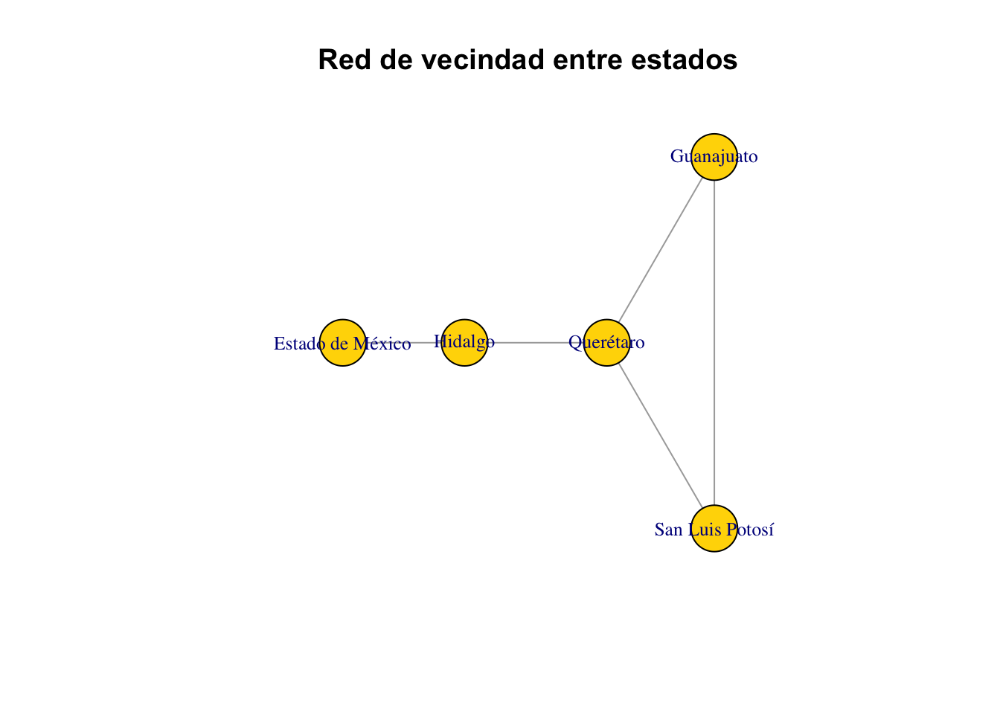
knitr::kable(
as.matrix(get.adjacency(ciudades)),
caption = "Matriz de adyacencia de la red de estados"
)| Querétaro | Guanajuato | San Luis Potosí | Hidalgo | Estado de México | |
|---|---|---|---|---|---|
| Querétaro | 0 | 1 | 1 | 1 | 0 |
| Guanajuato | 1 | 0 | 1 | 0 | 0 |
| San Luis Potosí | 1 | 1 | 0 | 0 | 0 |
| Hidalgo | 1 | 0 | 0 | 0 | 1 |
| Estado de México | 0 | 0 | 0 | 1 | 0 |
Interpretación: Querétaro es el nodo más conectado (grado (degree) 3) porque comparte frontera con tres estados. La matriz es simétrica porque la red es no dirigida.
Ejercicios con pistas
Ejercicio 1: Crea una red vacía de 7 nodos no dirigidos. Agrega conexiones para formar un triángulo entre los nodos 1, 2 y 3, y otro triángulo entre 5, 6 y 7. Conecta ambos triángulos con una conexión entre 3 y 5. Visualiza el resultado y calcula el grado (degree) de cada nodo.
💡 Pista 1
Usa make_empty_graph(n = 7, directed = FALSE) y luego add_edges() con el vector de pares.
💡 Pista 2
El vector de conexiones sería: c(1,2, 2,3, 1,3, 5,6, 6,7, 5,7, 3,5). Son 7 conexiones en total.
💡 Pista 3 — Pseudocódigo
1. g <- make_empty_graph(7, directed = FALSE)
2. g <- add_edges(g, c(1,2, 2,3, ...))
3. plot(g)
4. degree(g)Ejercicio 2: Genera un make_tree() con 3 hijos por nodo y profundidad suficiente para tener al menos 40 nodos. ¿Cuántos nodos tiene exactamente? ¿Cuántas hojas (nodos con grado (degree) 1)?
💡 Pista 1
En make_tree(n, children), n es el número total de nodos. Un árbol con 3 hijos y n = 40 tendrá exactamente 40 nodos.
💡 Pista 2
Las hojas son los nodos con grado (degree) 1. Filtra con: sum(degree(arbol) == 1).
💡 Pista 3 — Pseudocódigo
1. arbol <- make_tree(40, children = 3)
2. vcount(arbol)
3. sum(degree(arbol) == 1)
4. plot(arbol, layout = layout_as_tree, vertex.size = 5)Ejercicio 3: ¿Qué pasa si agregas un self-loop (conexión de un nodo a sí mismo) y una conexión duplicada? Crea una red, agrégalos, visualiza, y luego “limpia” la red con simplify(). Compara el antes y después.
💡 Pista 1
Usa add_edges(g, c(1,1)) para un self-loop y repite una conexión existente para duplicarla.
💡 Pista 2
simplify(g, remove.multiple = TRUE, remove.loops = TRUE) elimina duplicados y self-loops.
💡 Pista 3 — Pseudocódigo
1. g <- make_ring(5)
2. g <- add_edges(g, c(1,1, 1,2)) # loop + duplicada
3. ecount(g) # contar conexiones antes
4. plot(g)
5. g_limpio <- simplify(g)
6. ecount(g_limpio) # contar conexiones después
7. plot(g_limpio)Ejercicios propuestos
Ejercicio propuesto 1 ⭐
Crea una red estrella de 15 nodos. Calcula su grado (degree) máximo y mínimo. ¿Cuál es la densidad de conexiones (edge_density())?
Autoevaluación: El grado (degree) máximo debe ser 14 (el nodo central) y el mínimo 1 (nodos periféricos).
Ejercicio propuesto 2 ⭐⭐
Genera tres redes con sample_gnp(50, p) usando \(p = 0.05\), \(p = 0.20\) y \(p = 0.50\). Compara sus histogramas de grado (degree) en un gráfico con par(mfrow = c(1, 3)). ¿Qué patrón observas a medida que \(p\) aumenta?
Autoevaluación: A mayor \(p\), la distribución de grado (degree) se desplaza a la derecha y se vuelve más concentrada. Con \(p = 0.50\) el grado (degree) medio debe estar cerca de 25.
Ejercicio propuesto 3 ⭐⭐
Diseña una red hipotética de 8 ingredientes de cocina donde las conexiones representen que dos ingredientes aparecen juntos en una misma receta. Usa graph_from_literal() para definirla. Visualízala y calcula la matriz de distancias entre todos los pares.
Autoevaluación: Todos los nodos deben ser alcanzables entre sí (la red debe ser conexa). Si alguna distancia es
Inf, tienes componentes desconectados.
Ejercicio propuesto 4 ⭐⭐⭐
Crea una función en R llamada resumen_red() que reciba un grafo g y devuelva un data frame con las columnas: nodo, grado_total, grado_entrada, grado_salida. Pruébala con una red dirigida de al menos 10 nodos.
Autoevaluación: Tu función debe manejar correctamente tanto redes dirigidas como no dirigidas (en las no dirigidas, los tres grados son iguales).
Resumen del capítulo
flowchart LR
A[Crear redes] --> B[Manipular nodos y conexiones]
B --> C[Calcular grado (degree)]
C --> D[Matriz de adyacencia]
D --> E[Redes especiales]
E --> F["Siguiente: Distribuciones de grado (degree) →"]
style F fill:#e8f4f8,stroke:#3ABEF9
| Función | Descripción |
|---|---|
make_empty_graph() |
Crear grafo vacío |
add_vertices() / add_edges() |
Agregar nodos / conexiones |
delete_vertices() / delete_edges() |
Eliminar nodos / conexiones |
V(g) / E(g) |
Acceder a vértices / conexiones |
degree() |
Calcular grado (degree) |
get.adjacency() |
Obtener matriz de adyacencia |
make_star(), make_ring(), make_tree() |
Crear redes especiales |
Conexión con el siguiente capítulo: Ahora que sabes crear redes y calcular grados, en el ?@sec-grado (degree)-distribuciones exploraremos cómo se distribuyen esos grados y por qué algunas redes producen “superhubs” mientras que otras son más homogéneas.
Autoevaluación
Pregunta 1
Verdadero o Falso: En una red no dirigida, la matriz de adyacencia siempre es simétrica.
✅ Verdadero. Si \(i\) está conectado con \(j\), entonces \(j\) también está conectado con \(i\).
Pregunta 2
¿Cuál es el grado (degree) del nodo central en una red estrella de \(n\) nodos?
- \(1\)
- \(n\)
- \(n - 1\) ✅
- \(2\)
El nodo central se conecta con todos los demás, así que su grado (degree) es \(n - 1\).
Pregunta 3
¿Qué función usarías para eliminar self-loops y conexiones duplicadas de una red?
simplify() con los parámetros remove.multiple = TRUE y remove.loops = TRUE.
Pregunta 4
Verdadero o Falso: add_edges(g, c(1,2,3)) agrega tres conexiones.
❌ Falso. El vector debe tener un número par de elementos (pares origen-destino). Este código produciría un error.
Pregunta 5
¿Cuántas conexiones tiene un make_ring(10)?
Exactamente 10: cada nodo se conecta con su vecino y el último se conecta con el primero, formando un ciclo.